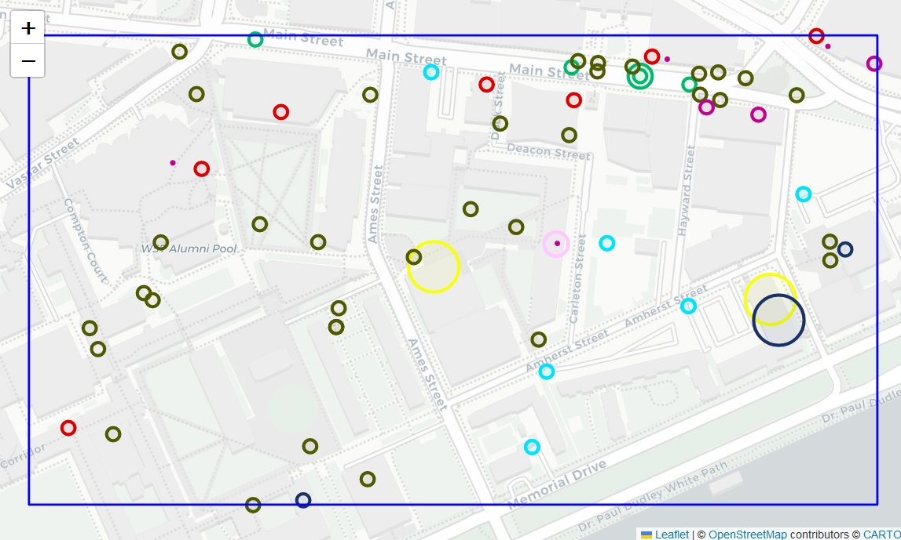

Visualization
How to visualize the data
Below is a sample piece of code that can be used to generate a visualization of POIs on a map.
using PyCall
using Colors
using OSMToolset
file = sample_osm_file()
df = find_poi(file)
ix = AttractivenessSpatIndex(df);
flm = pyimport("folium");
colrs = distinguishable_colors(length(ix.measures), [RGB(0.1,0.2,0.4)])
class2col = Dict(ix.measures .=> colrs);
m = flm.Map(tiles = "Stamen Toner")
line = 0
for row in eachrow(df)
line += 1
info = "$(row.group):$(row.key)=$(row.value)"
k = findfirst(==(Symbol(row.group)), ix.measures)
flm.Circle((row.lat, row.lon), color="#$(hex(colrs[k]))",radius=row.influence,
fill_color="#$(hex(colrs[k]))", fill_opacity=0.06, tooltip=info).add_to(m)
end
bb = getbounds(file)
bounds = [(bb.minlat, Float64(bb.minlon)), (bb.maxlat, Float64(bb.maxlon))]
m.fit_bounds(bounds)
flm.Rectangle(bounds, color="blue",weight=2).add_to(m)
mThe obtained result should be similar to the picture below.
